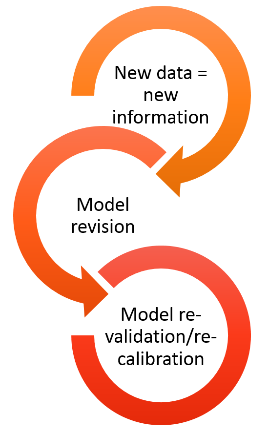

01 What is SpaDES?
Ceres Barros
January 26th, 2018
SpaDES 3-day challenge
a workshop for the SpaDES user inside you
Workshop outline:
Day 1. What is SpaDES and how does it work?
Part I. User, this is SpaDES. SpaDES, meet your new best friend
Why is modelling important?
Models are nowadays so important and widespread that we often don’t realize that most of what we use in our daily lives is the result of someone’s (or some team’s) model. From weather forecasting, to predicting stock market fluctuonations. From the design of your bike, to the estimation of blood sugar and insuline levels and how they vary hourly and according to different diets (in case you don’t know, this can be important for diabetes treatments, and drug dosage and scheduling)… Models are indeed ‘everywhere’.

Challenges modellers face
In a world where disciplines often interact to study complex questions, like climate change, natural resource management, or even where to build an offshore wind farm, modellers (and model users!) face challenges that can impair scientific and social progress:
-
Many models, low integration
- different scientific teams/individuals develop models to investigate the same question - which to choose?
- these models sometimes vary in their degree of complexity - when is one more appropriate than the other?
- and are often written in different programming languages, sometimes making their comparison, integration and development harder (especially for those who are not the model authors!)
-
High complexity
- often solving a question, or problem, requires the cooperation of different teams, each contributing with distinct data and, possibly, models that need to be integrated;


-
Era of big data
- data availability and volume are increasing FAST;
- today’s model, will be outdated tomorrow -> models need to be constantly updated, revised and re-validated and re-calibrated.
-
Reproducibility and transparency
- one of the first premisses of scientific method is to repeat analyses and verify whether hypotheses hold in different conditions -> science must be reproducible in order to progress;
- models (and modellers!) should be open to change and adaptation;
- results and conclusions must be shared with stakeholders, managers, policy makers and the general public.
How do we tackle these issues? -> continuous adaptive management
Continuous adaptive management is an existing framework that assumes a periodic re-assessment of the status of a situation or issue, e.g. the amount of waste a company produces. This leads to the design and implementation of new solutions - e.g. recycling paper or using rain water - their monitoring and evaluation, and their adjustment if need be, before the next assessment.
In modelling terms, this framework implies that for a given problem/question analyses and forecasts are repeated as new data, new methodologies and new or improved models arise. This can lead to a re-assessment of risk, inform decisions and influence policy making. These can in turn feedback into the process of re-framing the initial problem/question.
Although this framework is ideal, it is only seldomly applied across the scientific community.
Why? Because we are yet far from developing our research in a way that is easily repeatable, “upgradeable” and shareable. This renders the application of the continuous adaptive management framework costly, both temporally and financeally, especially in interdisciplinary projects that involve multiple teams and stakeholders.

Where do we go from here? SpaDES!
What is SpaDES?
SpaDES - Spatial Discrete Event Simulator - is a modelling framework in the form of an ensemble of R packages. It aims to provide modellers and non-modellers across different domains of life and earth sciences (and beyond!) with a modelling tool that they can control, apply and develop. In its whole, SpaDES bridges the gaps between modellers and model-users of different disciplines, between scientists, practitionners, managers, stakeholders and policy makers, and between scientists and the general public.
How?
1. SpaDES is written in R: a widely understood programming language, highly suited to statistical analyses, but flexible and fast enough to accomodate simulation work;
2. SpaDES can be used for a wide-range of modelling approaches: + process-based models; + phenomenological models; + spatially-explicit models; + … 3. SpaDES models are built of modules, i.e. self-contained, interacting pieces that execute a particular event, or process in the model; 4. SpaDES modules can be made available across the entire R community if module-developers wish it so; 5. SpaDES will soon include a web-app builder to make interactive simulation possible.
Like a smart-phone where users install and use the apps that they want, SpaDES can be seen as a platform where a model can be “assembled” from various pre-made modules. This allows non-modellers to run someone else’s model on their data and their parameters, and, on the other hand, it allows modellers write their own modules from scratch, run them and share them with the R user community.
An example
Our question(s): how will forest fires affect forest age? And how will climate change affect fire regimes and in turn the vegetation? How will timber supply be affected?
To start we’ll need
* a vegetation dynamics module - e.g. forestAge; * a fire simulator - e.g. forestSuccessionBeacons modules; * optional: + the interaction between fire and vegetation + statistical analyses/presentation of results
Depending on how modules are built, the interaction between modules may or may not require additional modules. Similarly, the presentation of results and their analyses can be directly made within the module producing them, or as posteriori using another module. Your call. SpaDES is all about flexibility!
Using the above mentioned modules would already allow an analysis of how fires affect forest age, and vice-versa.
Then add climate-change, timber supply models…
Analysing the effects of climate change could then be done by varying fire-related parameters (e.g. frequency and intensity of fires) in a simulation experiment. Alternatively, an additional module could simulate climate change effects, which would feedback unto both fire parameters and vegetation.
Finally, a timber supply module could “read” the vegetation maps produced after fire simulations and calculate timber quantity and quality from forest conditions (e.g. surviving tree species and their age).
Reserve, add new data, and re-run
Provided that modules are able to download, read and treat data adequeatly, updating the simulations for new data is easy. SpaDES comes with a set of functions (via the reproducible package) that enable caching model structure, parameters and simualtion results. This way, if new data only affects a section of the model, the user won’t have to repeat every step to update the simulations.
Decorate and serve
Because models are not just for modellers, a shiny app building package is being developed to transform any SpaDES simulation into a web-app. This provides an interactive way of visualising results, as users can change simulation parameters and turn modules on and off, whilst observing how this impacts simulation results. Importantly, it can be particularly useful when conveying results to a non-expert or even the public.
Shiny web-app demo here and here